Questão 1
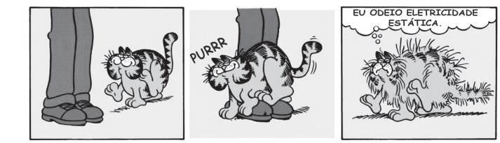Por qual motivo ocorre a eletrização ilustrada na tirinha?
Questao 2
A enorme quantidade de resíduos gerados pelo consumo crescente da sociedade traz para a humanidade
uma preocupação socioambiental, em especial pela quantidade de lixo produzido. Além da reciclagem e do
reúso, pode-se melhorar ainda mais a qualidade de vida, substituindo polímeros convencionais por polímeros
biodegradáveis.
Esses polímeros têm grandes vantagens socioambientais em relação aos convencionais porque
Questao 3
Uma pessoa percebe que a bateria de seu veículo fica descarregada após cinco dias sem uso. No início
desse período, a bateria funcionava normalmente e estava com o total de sua carga nominal, de 60 Ah. Pensando
na possibilidade de haver uma corrente de fuga, que se estabelece mesmo com os dispositivos elétricos do
veículo desligados, ele associa um amperímetro digital ao circuito do veículo.
Qual dos esquemas indica a maneira com que o amperímetro deve ser ligado e a leitura por ele realizada?
Questao 4
Um microempresário do ramo de cosméticos utiliza óleos essenciais e quer produzir um creme com fragrância
de rosas. O principal componente do óleo de rosas tem cadeia poli-insaturada e hidroxila em carbono terminal. O
catálogo dos óleos essenciais apresenta, para escolha da essência, estas estruturas químicas:
Qual substância o empresário deverá utilizar?
Questao 5
A fragmentação dos hábitats é caracterizada pela formação de ilhas da paisagem original, circundadas
por áreas transformadas. Esse tipo de interferência no ambiente ameaça a biodiversidade. Imagine que uma população de onças
foi isolada em uma mata pequena.
Elas se extinguiriam mesmo sem terem sido abatidas.
Diversos componentes da ilha de hábitat, como o
tamanho, a heterogeneidade, o seu entorno,
a sua conectividade e o efeito de borda são determinantes para
a persistência ou não das espécies originais
Uma medida que auxilia na conservação da biodiversidade nas ilhas mencionadas no texto compreende a
Questao 6
A sacarase (ou invertase) é uma enzima que atua no intestino humano hidrolisando o dissacarídeo sacarose nos monossacarídeos glicose e frutose. Em um estudo cinético da reação de hidrólise da sacarose (C12H22O11), foram dissolvidos 171 g de sacarose em 500 mL de água. Observou-se que, a cada 100 minutos de reação, a concentração de sacarose foi reduzida à metade, qualquer que fosse o momento escolhido como tempo inicial. As massas molares dos elementos H, C e O são iguais a 1, 12 e 16 g mol−1, respectivamente.
Qual é a concentração de sacarose depois de 400 minutos do início da reação de hidrólise?
Questao 7
Grandes reservatórios de óleo leve de melhor qualidade e que produz petróleo mais fino foram descobertos no litoral brasileiro numa camada denominada pré-sal, formada há 150 milhões de anos.
A utilização desse recurso energético acarreta para o ambiente um desequilíbrio no ciclo do
Questao 8
Em uma usina geradora de energia elétrica, seja através de uma queda-d’água ou através de vapor sob pressão, as pás do gerador são postas a girar. O movimento relativo de um ímã em relação a um conjunto de bobinas produz um fluxo magnético variável através delas, gerando uma diferença de potencial em seus terminais. Durante o funcionamento de um dos geradores, o operador da usina percebeu que houve um aumento inesperado da diferença de potencial elétrico nos terminais das bobinas.
Nessa situação, o aumento do módulo da diferença de potencial obtida nos terminais das bobinas resulta do aumento do(a)
Questao 9
Você foi contratado para sincronizar os quatro
semáforos de uma avenida, indicados pelas letras O, A,
B e C, conforme a figura.
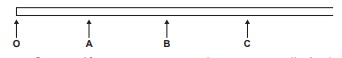
Os semáforos estão separados por uma distância de 500 m. Segundo os dados estatísticos da companhia controladora de trânsito, um veículo, que está inicialmente parado no semáforo O, tipicamente parte com aceleração constante de 1 m s−2 até atingir a velocidade de 72 km h−1 e, a partir daí, prossegue com velocidade constante. Você deve ajustar os semáforos A, B e C de modo que eles mudem para a cor verde quando o veículo estiver a 100 m de cruzá-los, para que ele não tenha que reduzir a velocidade em nenhum momento.
Considerando essas condições, aproximadamente quanto tempo depois da abertura do semáforo O os semáforos A, B e C devem abrir, respectivamente?
Questao 10
Nos dias atuais, o amplo uso de objetos de plástico gera bastante lixo, que muitas vezes é eliminado pela população por meio da queima. Esse procedimento é prejudicial ao meio ambiente por lançar substâncias poluentes. Para constatar esse problema, um estudante analisou a decomposição térmica do policloreto de vinila (PVC), um tipo de plástico, cuja estrutura é representada na figura.
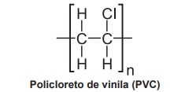
Para realizar esse experimento, o estudante colocou uma amostra de filme de PVC em um tubo de ensaio e o aqueceu, promovendo a decomposição térmica. Houve a liberação majoritária de um gás diatômico heteronuclear que foi recolhido em um recipiente acoplado ao tubo de ensaio. Esse gás, quando borbulhado em solução alcalina diluída contendo indicador ácido-base, alterou a cor da solução. Além disso, em contato com uma solução aquosa de carbonato de sódio (Na2 CO3), liberou gás carbônico.
Questao 11
Uma população (momento A) sofre isolamento em duas subpopulações (momento B) por um fator de isolamento (I). Passado um tempo, essas subpopulações apresentam características fenotípicas e genotípicas que as distinguem (momento C), representadas na figura pelas tonalidades de cor. O posterior desaparecimento do fator de isolamento I pode levar, no momento D, às situações D1 e D2.
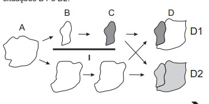
A representação indica que, no momento D, na situação
Questao 12
A obtenção de óleos vegetais, de maneira geral, passa pelas etapas descritas no quadro.
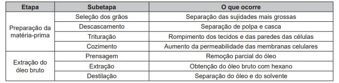
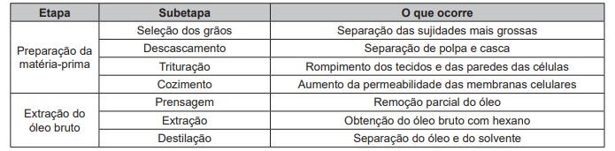
Questao 13
O dióxido de carbono passa para o estado sólido (gelo seco) a −78 °C e retorna ao estado gasoso à temperatura
ambiente. O gás é facilmente solubilizado em água, capaz de absorver radiação infravermelha da superfície da terra
e não conduz eletricidade. Ele é utilizado como matéria-prima para a fotossíntese até o limite de saturação. Após a fixação
pelos organismos autotróficos, o gás retorna ao meio ambiente pela respiração aeróbica, fermentação, decomposição
ou por resíduos industriais, queima de combustíveis fósseis e queimadas. Apesar da sua importância ecológica, seu
excesso causa perturbações no equilíbrio ambiental.
Considerando as propriedades descritas, o aumento atmosférico da substância afetará os organismos aquáticos em razão da
Questao 14
Grupos de proteção ao meio ambiente conseguem resgatar muitas aves aquáticas vítimas de vazamentos de
petróleo. Essas aves são lavadas com água e detergente neutro para a retirada completa do óleo de seu corpo e,
posteriormente, são aquecidas, medicadas, desintoxicadas e alimentadas. Mesmo após esses cuidados, o retorno ao
ambiente não pode ser imediato, pois elas precisam recuperar a capacidade de flutuação.
Para flutuar, essas aves precisam
Questao 15
OOs manuais de refrigerador apresentam a recomendação de que o equipamento não deve ser instalado próximo a fontes de calor, como fogão e aquecedores, ou em local onde incida diretamente a luz do sol. A instalação em local inadequado prejudica o funcionamento do refrigerador e aumenta o consumo de energia.
O não atendimento dessa recomendação resulta em aumento do consumo de energia porque
Questao 16
Um mergulhador fica preso ao explorar uma caverna no oceano. Dentro da caverna formou-se um bolsão de ar, como mostrado na fi gura, onde o mergulhador se abrigou.
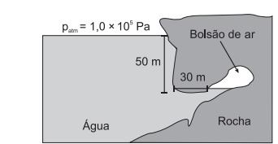
Durante o resgate, para evitar danos a seu
organismo, foi necessário que o mergulhador passasse
por um processo de descompressão antes de retornar
à superfície para que seu corpo fi casse novamente sob
pressão atmosférica. O gráfi co mostra a relação entre
os tempos de descompressão recomendados para
indivíduos nessa situação e a variação de pressão
Considere que a aceleração da gravidade seja
igual a 10 m s−2 e que a densidade da água seja de
ρ = 1 000 kg m−3.
Em minutos, qual é o tempo de descompressão a que o mergulhador deverá ser submetido?
Questao 17
A Torre Eiffel, com seus 324 metros de altura, feita
com treliças de ferro, pesava 7 300 toneladas quando
terminou de ser construída em 1889. Um arquiteto
resolve construir um protótipo dessa torre em escala
1:100, usando os mesmos materiais (cada dimensão
linear em escala de 1:100 do monumento real).
Considere que a torre real tenha uma massa Mtorre
e exerça na fundação sobre a qual foi erguida uma
pressão Ptorre. O modelo construído pelo arquiteto terá
uma massa Mmodelo e exercerá uma pressão Pmodelo.
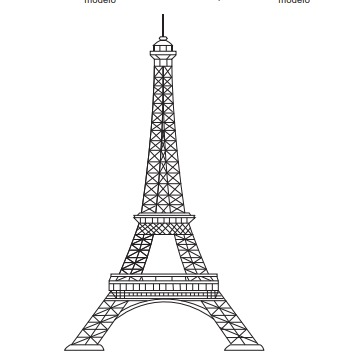
Como a pressão exercida pela torre se compara com a pressão exercida pelo protótipo? Ou seja, qual é a razão entre as pressões (Ptorre)/(Pmodelo) ?
Questao 18
Na indústria farmacêutica, é muito comum o emprego de substâncias de revestimento em medicamentos de uso oral, pois trazem uma série de benefícios como alteração de sabor em medicamentos que tenham gosto ruim, melhoria da assimilação do composto, entre outras ações. Alguns compostos poliméricos à base do polissacarídeo celulose são utilizados para garantir que o fármaco somente seja liberado quando em contato com soluções aquosas cujo pH se encontre próximo da faixa da neutralidade.
Qual é a finalidade do uso desse revestimento à base de celulose?
Questao 19
As panelas de pressão reduzem o tempo de cozimento dos alimentos por elevar a temperatura de ebulição da água. Os usuários conhecedores do utensílio normalmente abaixam a intensidade do fogo em panelas de pressão após estas iniciarem a saída dos vapores.
Ao abaixar o fogo, reduz-se a chama, pois assim evita-se o(a)
Questao 20
A nanotecnologia pode ser caracterizada quando os compostos estão na ordem de milionésimos de milímetros, como na utilização de nanomateriais catalíticos nos processos industriais. O uso desses materiais aumenta a eficiência da produção, consome menos energia e gera menores quantidades de resíduos. O sucesso dessa aplicação tecnológica muitas vezes está relacionado ao aumento da velocidade da reação química envolvida.
O êxito da aplicação dessa tecnologia é por causa da realização de reações químicas que ocorrem em condições de
Questão 21
Os fones de ouvido tradicionais transmitem a música diretamente para os nossos ouvidos. Já os modelos dotados de tecnologia redutora de ruído — Cancelamento de Ruído (CR) — além de transmitirem música, também reduzem todo ruído inconsistente à nossa volta, como o barulho de turbinas de avião e aspiradores de pó. Os fones de ouvido CR não reduzem realmente barulhos irregulares como discursos e choros de bebês. Mesmo assim, a supressão do ronco das turbinas do avião contribui para reduzir a “fadiga de ruído”, um cansaço persistente provocado pela exposição a um barulho alto por horas a fio. Esses aparelhos também permitem que nós ouçamos músicas ou assistamos a vídeos no trem ou no avião a um volume muito menor (e mais seguro).
A tecnologia redutora de ruído CR utilizada na produção de fones de ouvido baseia-se em qual fenômeno ondulatório?
Questão 22
Para garantir que produtos eletrônicos estejam
armazenados de forma adequada antes da venda,
algumas empresas utilizam cartões indicadores de
umidade nas embalagens desses produtos. Alguns
desses cartões contêm um sal de cobalto que
muda de cor em presença de água, de acordo com
a equação química:
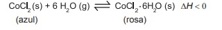
CComo você procederia para reutilizar, num curto
intervalo de tempo, um cartão que já estivesse com a
coloração rosa?
Questão 23
Nos desenhos animados, com frequência se vê um
personagem correndo na direção de um abismo, mas, ao
invés de cair, ele continua andando no vazio e só quando
percebe que não há nada sob seus pés é que ele para
de andar e cai verticalmente. No entanto, para observar
uma trajetória de queda num experimento real, pode-se
lançar uma bolinha, com velocidade constante (V0
), sobre
a superfície de uma mesa e verificar o seu movimento de
queda até o chão.
Qual figura melhor representa a trajetória de queda da bolinha?
Questão 24
Dois engenheiros estão verificando se uma cavidade
perfurada no solo está de acordo com o planejamento
de uma obra, cuja profundidade requerida é de 30 m.
O teste é feito por um dispositivo denominado oscilador
de áudio de frequência variável, que permite relacionar
a profundidade com os valores da frequência de duas
ressonâncias consecutivas, assim como em um tubo
sonoro fechado. A menor frequência de ressonância que
o aparelho mediu foi 135 Hz. Considere que a velocidade
do som dentro da cavidade perfurada é de 360 m s-1
.
Se a profundidade estiver de acordo com o projeto, qual
será o valor da próxima frequência de ressonância que
será medida?
Questão 25
CInstituições acadêmicas e de pesquisa no mundo estão
inserindo genes em genomas de plantas que possam
codificar produtos de interesse farmacológico. No Brasil,
está sendo desenvolvida uma variedade de soja com um
viricida ou microbicida capaz de prevenir a contaminação
pelo vírus causador da aids. Essa leguminosa está sendo
induzida a produzir a enzima cianovirina-N, que tem
eficiência comprovada contra o vírus.
A técnica para gerar essa leguminosa é um exemplo de
Questão 26
Instituições acadêmicas e de pesquisa no mundo estão
inserindo genes em genomas de plantas que possam
codificar produtos de interesse farmacológico. No Brasil,
está sendo desenvolvida uma variedade de soja com um
viricida ou microbicida capaz de prevenir a contaminação
pelo vírus causador da aids. Essa leguminosa está sendo
induzida a produzir a enzima cianovirina-N, que tem
eficiência comprovada contra o vírus.
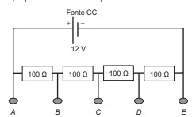
Ele tem um equipamento que opera em 9,0 V com uma resistência interna de 10 kΩ. Entre quais pontos do divisor de tensão esse equipamento deve ser ligado para funcionar corretamente e qual será o valor da intensidade da corrente nele estabelecida?
Questão 27
Pesquisadores dos Estados Unidos desenvolveram uma nova técnica, que utiliza raios de luz infravermelha (invisíveis a olho nu) para destruir tumores. Primeiramente, o paciente recebe uma injeção com versões modificadas de anticorpos que têm a capacidade de “grudar” apenas nas células cancerosas. Sozinhos, eles não fazem nada contra o tumor. Entretanto, esses anticorpos estão ligados a uma molécula, denominada IR700, que funcionará como uma “microbomba”, que irá destruir o câncer. Em seguida, o paciente recebe raios infravermelhos. Esses raios penetram no corpo e chegam até a molécula IR700, que é ativada e libera uma substância que ataca a célula cancerosa. .
Com base nas etapas de desenvolvimento, o nome apropriado para a técnica descrita é
Questão 28
Aranhas, escorpiões, carrapatos e ácaros são representantes da classe dos Aracnídeos. Esses animais são terrestres em sua grande maioria e ocupam os mais variados hábitats, tais como montanhas altas, pântanos, desertos e solos arenosos. Podem ter sido os primeiros representantes do filo Arthropoda a habitar a terra seca..
A característica que justifica o sucesso adaptativo desse grupo na ocupação do ambiente terrestre é a presença de
Questão 29
Pesquisadores coletaram amostras de água de um
rio em pontos diferentes, distantes alguns quilômetros
um do outro. Ao longo do rio, há locais de águas limpas,
como também locais que recebem descarga de esgoto
de área urbana, e locais onde há decomposição ativa
com ausência de peixes. Os pesquisadores analisaram
dois parâmetros: oxigênio dissolvido (OD) e demanda
bioquímica de oxigênio (DBO) em cada ponto de coleta
de água, obtendo o gráfico:

O OD é proveniente da atmosfera e da fotossíntese que ocorre no curso-d’água e sua concentração é função das variáveis físicas, químicas e bioquímicas locais. A DBO é a quantidade de oxigênio consumido por microrganismos em condições aeróbicas para degradar uma determinada quantidade de matéria orgânica, durante um período de tempo, numa temperatura de incubação específica.
Qual ponto de amostragem da água do rio está mais próximo ao local em que o rio recebe despejo de esgoto?
Questão 30
O crescimento da frota de veículos em circulação
no mundo tem levado à busca e desenvolvimento
de tecnologias que permitam minimizar emissões de
poluentes atmosféricos. O uso de veículos elétricos é
uma das propostas mais propagandeadas por serem de
emissão zero. Podemos comparar a emissão de carbono
na forma de CO2
(massa molar igual a 44 g mol−1) para os
dois tipos de carros (a combustão e elétrico). Considere
que os veículos tradicionais a combustão, movidos a
etanol (massa molar igual a 46 g mol−1), emitem uma
média de 2,6 mol de CO2
por quilômetro rodado, e os
elétricos emitem o equivalente a 0,45 mol de CO2
por
quilômetro rodado (considerando as emissões na geração
e transmissão da eletricidade). A reação de combustão
do etanol pode ser representada pela equação química:
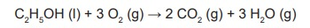
Foram analisadas as emissões de CO2 envolvidas em dois veículos, um movido a etanol e outro elétrico, em um mesmo trajeto de 1 000 km.
A quantidade equivalente de etanol economizada, em quilograma, com o uso do veículo elétrico nesse trajeto, é mais próxima de
Questão 31
Em uma aula sobre metabolismo energético, foi apresentado um experimento clássico realizado por Engelmann. Um recipiente contendo bactérias aeróbias e uma alga verde filamentosa foi submetido à iluminação de uma fonte de luz, representada pelo microespectro. Após a explicação, um aluno esquematizou na lousa o resultado do referido experimento.
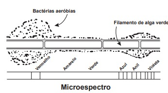
Considerando a figura, a faixa do microespectro em que a alga possui maior taxa de realização fotossintética é a do:
Questão 32
O exame parasitológico de fezes é utilizado para detectar ovos de parasitos. Um dos métodos utilizados, denominado de centrífugo-flutuação, considera a densidade dos ovos em relação a uma solução de densidade 1,15 g mL−1. Assim, ovos que flutuam na superfície dessa solução são detectados. Os dados de densidade dos ovos de alguns parasitos estão apresentados na tabela.

Considerando-se a densidade dos ovos e da solução, ovos de quais parasitos podem ser detectados por esse método?
Questão 33
Em seu laboratório, um técnico em química foi
incumbido de tratar um resíduo, evitando seu descarte
direto no meio ambiente. Ao encontrar o frasco, observou
a seguinte informação: “Resíduo: mistura de acetato de
etila e água”.
Considere os dados do acetato de etila:
• Baixa solubilidade em água;
• Massa específica = 0,9 g cm−3;
• Temperatura de fusão = −83 °C;
• Pressão de vapor maior que a da água.
P
A fim de tratar o resíduo, recuperando o acetato de etila, o técnico deve
Questão 34
Em 2011, uma falha no processo de perfuração realizado por uma empresa petrolífera ocasionou derramamento de petróleo na bacia hidrográfica de Campos, no Rio de Janeiro.
Os impactos decorrentes desse derramamento ocorrem porque os componentes do petróleo
Questão 35
ma população encontra-se em equilíbrio genético quanto ao sistema ABO, em que 25% dos indivíduos pertencem ao grupo O e 16%, ao grupo A homozigotos. Considerando que: p = frequência de IA; q = frequência de IB; e r = frequência de i, espera-se encontrar:
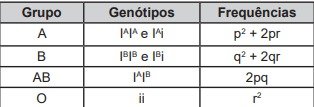.
A porcentagem de doadores compatíveis para alguém do grupo B nessa população deve ser de
Questão 36
Embora a energia nuclear possa ser utilizada para fins pacíficos, recentes conflitos geopolíticos têm trazido preocupações em várias partes do planeta e estimulado discussões visando o combate ao uso de armas de destruição em massa. Além do potencial destrutivo da bomba atômica, uma grande preocupação associada ao emprego desse artefato bélico é a poeira radioativa deixada após a bomba ser detonada.
Qual é o processo envolvido na detonação dessa bomba?
Questão 37
Plantas pioneiras são as que iniciam o processo natural de cicatrização de uma área desprovida de vegetação. Em geral, têm pequeno porte e crescem muito rápido, desenvolvem-se a pleno sol e são pouco exigentes quanto às condições do solo. Produzem grande quantidade de sementes e possuem ciclo de vida curto.
Essas plantas são importantes em um projeto de restauração ambiental, pois promovem, no solo,
Questão 38
Mesmo para peixes de aquário, como o peixe
arco-íris, a temperatura da água fora da faixa ideal
(26 °C a 28 °C), bem como sua variação brusca, pode
afetar a saúde do animal. Para manter a temperatura
da água dentro do aquário na média desejada, utilizamse dispositivos de aquecimento com termostato. Por
exemplo, para um aquário de 50 L, pode-se utilizar um
sistema de aquecimento de 50 W otimizado para suprir
sua taxa de resfriamento. Essa taxa pode ser considerada
praticamente constante, já que a temperatura externa ao
aquário é mantida pelas estufas.
Utilize para a água o
calor específico 4,0 kJ kg−1 K−1 e a densidade 1 kg L−1.
Se o sistema de aquecimento for desligado por 1 h, qual
o valor mais próximo para a redução da temperatura da
água do aquário?
Questão 39
Em uma pesquisa estão sendo testados cinco quimioterápicos quanto à sua capacidade antitumoral. No entanto, para o tratamento de pacientes, sabe-se que é necessário verificar também o quanto cada composto agride células normais. Para o experimento, partiu-se de cultivos de células tumorais (colunas escuras na figura) e células normais (colunas claras) com o mesmo número de células iniciais. Dois grupos-controle não receberam quimioterápicos: controle de células tumorais (CT) e de células normais (CN). As colunas I, II, III, IV e V correspondem aos grupos tratados com os cinco compostos. O número de células viáveis após os tratamentos está representado pelas colunas.
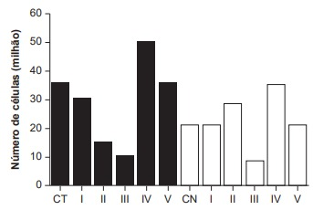
Qual quimioterápico deve ser escolhido para tratamento desse tipo de tumor?
Questão 40
Herschel, em 1880, começou a escrever sobre a condensação da luz solar no foco de uma lente e queria verificar
de que maneira os raios coloridos contribuem para o aquecimento. Para isso, ele projetou sobre um anteparo o espectro
solar obtido com um prisma, colocou termômetros nas diversas faixas de cores e verificou nos dados obtidos que um
dos termômetros iluminados indicou um aumento de temperatura maior para uma determinada faixa de frequências.
Para verificar a hipótese de Herschel, um estudante montou o dispositivo apresentado na figura. Nesse aparato,
cinco recipientes contendo água, à mesma temperatura inicial, e separados por um material isolante térmico e refletor são
posicionados lado a lado (A, B, C, D e E) no interior de uma caixa de material isolante térmico e opaco. A luz solar, ao entrar
na caixa, atravessa o prisma e incide sobre os recipientes. O estudante aguarda até que ocorra o aumento da temperatura
e a afere em cada recipiente.
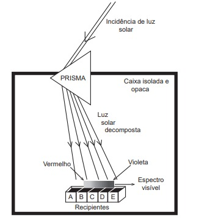
Em qual dos recipientes a água terá maior temperatura ao final do experimento?
Questão 41
A Química Verde é um ramo da química que prega o desenvolvimento de processos eficientes, que transformem a maior parte do reagente em produto, de forma mais rápida e seletiva, que utilizem poucos reagentes, que produzam somente o produto desejado, evitando a formação de coprodutos, e que utilizem solventes não agressivos ao meio ambiente. Assim, as indústrias contornariam problemas relacionados à poluição ambiental e ao desperdício de água e energia
O perfil de um processo que segue todos os princípios desse ramo da química pode ser representado por:
Questão 42
Megaespetáculos com queima de grande quantidade
de fogos de artifício em festas de final de ano são muito
comuns no Brasil. Após a queima, grande quantidade
de material particulado permanece suspensa no ar.
Entre os resíduos, encontram-se compostos de sódio,
potássio, bário, cálcio, chumbo, antimônio, cromo, além
de percloratos e gases, como os dióxidos de nitrogênio
e enxofre.
Esses espetáculos promovem riscos ambientais, porque
Megaespetáculos com queima de grande quantidade de fogos de artifício em festas de final de ano são muito comuns no Brasil. Após a queima, grande quantidade de material particulado permanece suspensa no ar. Entre os resíduos, encontram-se compostos de sódio, potássio, bário, cálcio, chumbo, antimônio, cromo, além de percloratos e gases, como os dióxidos de nitrogênio e enxofre.
Esses espetáculos promovem riscos ambientais, porque
Questão 43
Há muitos mitos em relação a como se proteger de raios, cobrir espelhos e não pegar em facas, garfos e outros objetos metálicos, por exemplo. Mas, de fato, se houver uma tempestade com raios, alguns cuidados são importantes, como evitar ambientes abertos. Um bom abrigo para proteção é o interior de um automóvel, desde que este não seja conversível.
Qual o motivo físico da proteção fornecida pelos automóveis, conforme citado no texto?Questão 44
As moedas despertam o interesse de colecionadores, numismatas e investidores há bastante tempo. Uma moeda de 100% cobre, circulante no período do Brasil Colônia, pode ser bastante valiosa. O elevado valor gera a necessidade de realização de testes que validem a procedência da moeda, bem como a veracidade de sua composição. Sabendo que a densidade do cobre metálico é próxima de 9 g cm−³, um investidor negocia a aquisição de um lote de quatro moedas A, B, C e D fabricadas supostamente de 100% cobre e massas 26 g, 27 g, 10 g e 36 g, respectivamente. Com o objetivo de testar a densidade das moedas, foi realizado um procedimento em que elas foram sequencialmente inseridas em uma proveta contendo 5 mL de água, conforme esquematizado.
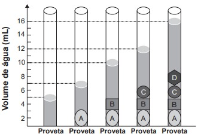
Com base nos dados obtidos, o investidor adquiriu as moedas
Questão 45
A fabricação da Bandeira Nacional deve obedecer ao
descrito na Lei n. 5.700, de 1º de setembro de 1971, que
trata dos Símbolos Nacionais. No artigo que se refere às
dimensões da Bandeira, observa-se:
“Para cálculos das dimensões, será tomada por base
a largura, dividindo-a em 14 (quatorze) partes iguais,
sendo que cada uma das partes será considerada uma
medida ou módulo (M). Os demais requisitos dimensionais
seguem o critério abaixo:
I. Comprimento será de vinte módulos (20 M);
II. A distância dos vértices do losango amarelo ao
quadro externo será de um módulo e sete décimos
(1,7 M);
III. O raio do círculo azul no meio do losango
amarelo será de três módulos e meio (3,5 M).”
NA figura indica as cores da bandeira do Brasil e localiza o quadro externo a que se refere a Lei n. 5.700.
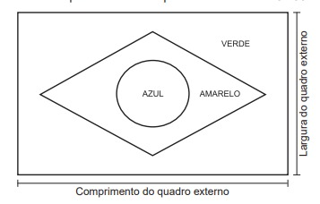Um torcedor, preparando-se para a Copa do Mundo
e dispondo de cortes de tecidos verde (180 cm x 150 cm)
e amarelo (o quanto baste), deseja confeccionar a maior
Bandeira Nacional possível a partir das medidas do tecido
verde.
Qual a medida, em centímetro, do lado do menor
quadrado de tecido azul que deverá ser comprado para
confecção do círculo da bandeira desejada?
Questão 46
Uma empresa de ônibus utiliza um sistema de
vendas de passagens que fornece a imagem de todos
os assentos do ônibus, diferenciando os assentos já
vendidos, por uma cor mais escura, dos assentos ainda
disponíveis. A empresa monitora, permanentemente,
o número de assentos já vendidos e compara-o com
o número total de assentos do ônibus para avaliar a
necessidade de alocação de veículos extras.
Na imagem tem-se a informação dos assentos já
vendidos e dos ainda disponíveis em um determinado
instante.
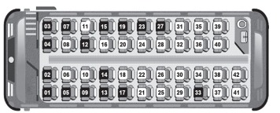
A razão entre o número de assentos já vendidos e o total de assentos desse ônibus, no instante considerado na imagem, é
Questão 47
A caixa-d’água de um edifício terá a forma de um
paralelepípedo retângulo reto com volume igual a
28 080 litros. Em uma maquete que representa o edifício,
a caixa-d’água tem dimensões 2 cm × 3,51 cm × 4 cm.
Dado: 1 dm³ = 1 L.
A escala usada pelo arquiteto foi
Questão 48
Os gráficos representam a produção de peças em uma indústria e as horas trabalhadas dos funcionários no período de cinco dias. Em cada dia, o gerente de produção aplica uma metodologia diferente de trabalho. Seu objetivo é avaliar a metodologia mais eficiente para utilizá-la como modelo nos próximos períodos. Sabe-se que, neste caso, quanto maior for a razão entre o número de peças produzidas e o número de horas trabalhadas, maior será a eficiência da metodologia.
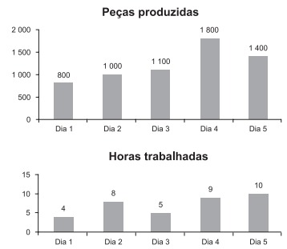Em qual dia foi aplicada a metodologia mais eficiente?
Questão 49
O proprietário de um apartamento decidiu instalar
porcelanato no piso da sala. Essa sala tem formato
retangular com 3,2 m de largura e 3,6 m de comprimento.
As peças do porcelanato têm formato de um quadrado
com lado medindo 80 cm. Esse porcelanato é vendido em
dois tipos de caixas, com os preços indicados a seguir.
• Caixas do tipo A: 4 unidades de piso, R$ 35,00;
• Caixas do tipo B: 3 unidades de piso, R$ 27,00.
Na instalação do porcelanato, as peças podem ser
recortadas e devem ser assentadas sem espaçamento
entre elas, aproveitando-se ao máximo os recortes
feitos.
A compra que atende às necessidades do proprietário, proporciona a menor sobra de pisos e resulta no menor preço é
Questão 50
Um hotel de 3 andares está sendo construído. Cada
andar terá 100 quartos. Os quartos serão numerados de
100 a 399 e cada um terá seu número afixado à porta.
Cada número será composto por peças individuais, cada
uma simbolizando um único algarismo.
Qual a quantidade mínima de peças, simbolizando o algarismo 2, necessárias para identificar o número de todos os quartos?
Questão 51
O Estatuto do Idoso, no Brasil, prevê certos direitos às pessoas com idade avançada, concedendo a estas, entre outros benefícios, a restituição de imposto de renda antes dos demais contribuintes. A tabela informa os nomes e as idades de 12 idosos que aguardam suas restituições de imposto de renda. Considere que, entre os idosos, a restituição seja concedida em ordem decrescente de idade e que, em subgrupos de pessoas com a mesma idade, a ordem seja decidida por sorteio..
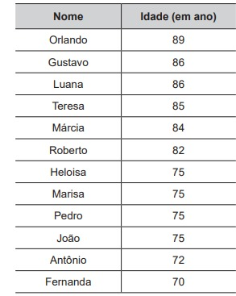
Nessas condições, a probabilidade de João ser a sétima pessoa do grupo a receber sua restituição é igual a
Questão 52
No Brasil, o tempo necessário para um estudante realizar sua formação até a diplomação em um curso superior, considerando os 9 anos de ensino fundamental, os 3 anos do ensino médio e os 4 anos de graduação (tempo médio), é de 16 anos. No entanto, a realidade dos brasileiros mostra que o tempo médio de estudo de pessoas acima de 14 anos é ainda muito pequeno, conforme apresentado na tabela.
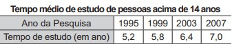
Considere que o incremento no tempo de estudo,
a cada período, para essas pessoas, se mantenha
constante até o ano 2050, e que se pretenda chegar ao
patamar de 70% do tempo necessário à obtenção do
curso superior dado anteriormente.
O ano em que o tempo médio de estudo de pessoas
acima de 14 anos atingirá o percentual pretendido será
Questão 53
Uma torneira está gotejando água em um balde com capacidade de 18 litros. No instante atual, o balde se encontra com ocupação de 50% de sua capacidade. A cada segundo caem 5 gotas de água da torneira, e uma gota é formada, em média, por 5 × 10−2 mL de água.
Disponível em: http://agenciabrasil.ebc.com.br. Acesso em: 7 dez. 2018 (adaptado).
Quanto tempo, em hora, será necessário para encher completamente o balde, partindo do instante atual?
Questão 54
Um clube deseja produzir miniaturas em escala do
troféu que ganhou no último campeonato. O troféu está
representado na Figura 1 e é composto por uma base
em formato de um paralelepípedo reto-retângulo de
madeira, sobre a qual estão fi xadas três hastes verticais
que sustentam uma esfera de 30 cm de diâmetro, que fi ca
centralizada sobre a base de madeira. O troféu tem 100 cm
de altura, incluída sua base.
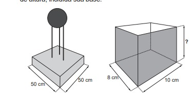
A miniatura desse troféu deverá ser instalada
no interior de uma caixa de vidro, em formato de
paralelepípedo reto-retângulo, cujas dimensões internas
de sua base estão indicadas na Figura 2, de modo que
a base do troféu seja colada na base da caixa e distante
das paredes laterais da caixa de vidro em pelo menos 1 cm.
Deve ainda haver uma distância de exatos 2 cm entre o
topo da esfera e a tampa dessa caixa de vidro. Nessas
condições deseja-se fazer a maior miniatura possível.
A medida da altura, em centímetro, dessa caixa de vidro
deverá ser igual a
A revolta descrita no texto, ocorrida na Inglaterra no século XIX, foi uma reação ao seguinte processo socioespacial:
Questão 55
Uma casa de dois andares está sendo projetada. É necessário incluir no projeto a construção de uma escada para o acesso ao segundo andar. Para o cálculo das dimensões dos degraus utilizam-se as regras: |2h + b − 63,5| ≤ 1,5 e 16 ≤ h ≤ 19, nas quais h é a altura do degrau (denominada espelho) e b é a profundidade da pisada, como mostra a fi gura. Por conveniência, escolheu-se a altura do degrau como sendo h = 16. As unidades de h e b estão em centímetro.
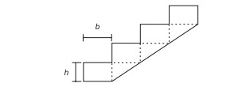Nesse caso, o mais amplo intervalo numérico ao qual a profundidade da pisada (b) deve pertencer, para que as regras sejam satisfeitas é
Questão 56
Muitos modelos atuais de veículos possuem
computador de bordo. Os computadores informam em
uma tela diversas variações de grandezas associadas
ao desempenho do carro, dentre elas o consumo médio
de combustível. Um veículo, de um determinado modelo,
pode vir munido de um dos dois tipos de computadores
de bordo:
• Tipo A: informa a quantidade X de litro de
combustível gasto para percorrer 100 quilômetros;
• Tipo B: informa a quantidade de quilômetro que
o veículo é capaz de percorrer com um litro de
combustível.
Um veículo utiliza o computador do Tipo A, e ao fi nal
de uma viagem o condutor viu apresentada na tela a
informação “X/100”.
Caso o seu veículo utilizasse o computador do Tipo B, o valor informado na tela seria obtido pela operação
Questão 57
A Pesquisa Nacional por Amostra de Domicílios (Pnad) é uma pesquisa feita anualmente pelo IBGE, exceto nos anos em que há Censo. Em um ano, foram entrevistados 363 mil jovens para fazer um levantamento sobre suas atividades profissionais e/ou acadêmicas. Os resultados da pesquisa estão indicados no gráfico.
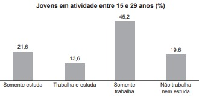De acordo com as informações dadas, o número de jovens entrevistados que trabalha é
Questão 58
A Lei de Zipf, batizada com o nome do linguista americano George Zipf, é uma lei empírica que relaciona a frequência ( f ) de uma palavra em um dado texto com o seu ranking (r). Ela é dada por
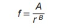
O ranking da palavra é a sua posição ao ordenar as
palavras por ordem de frequência. Ou seja, r = 1 para a
palavra mais frequente, r = 2 para a segunda palavra mais
frequente e assim sucessivamente. A e B são constantes
positivas.
Com base nos valores de X = log (r) e Y = log ( f ) , é possível estimar valores para A e B. No caso hipotético em que a lei é verificada exatamente, a relação entre Y e X é
Questão 59
Enquanto um ser está vivo, a quantidade de carbono
14 nele existente não se altera. Quando ele morre, essa
quantidade vai diminuindo. Sabe-se que a meia-vida do
carbono 14 é de 5 730 anos, ou seja, num fóssil de um
organismo que morreu há 5 730 anos haverá metade do
carbono 14 que existia quando ele estava vivo. Assim,
cientistas e arqueólogos usam a seguinte fórmula para
saber a idade de um fóssil encontrado: Q t = Q0 ∙ 2 − t
5730
em que t é o tempo, medido em ano, Q t é a quantidade
de carbono 14 medida no instante t e Q0
é a quantidade
de carbono 14 no ser vivo correspondente.
Um grupo de arqueólogos, numa de suas expedições,
encontrou 5 fósseis de espécies conhecidas e mediram
a quantidade de carbono 14 neles existente. Na tabela
temos esses valores juntamente com a quantidade de
carbono 14 nas referidas espécies vivas.
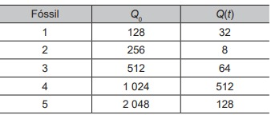
O fóssil mais antigo encontrado nessa expedição foi
Questão 60
Uma das Sete Maravilhas do Mundo Moderno é o Templo de Kukulkán, localizado na cidade de Chichén Itzá, no México. Geometricamente, esse templo pode ser representado por um tronco reto de pirâmide de base quadrada. As quantidades de cada tipo de figura plana que formam esse tronco de pirâmide são
As quantidades de cada tipo de figura plana que formam esse tronco de pirâmide são
Questão 61
Texto I
Um processo de aeração, que consiste na introdução
de ar num líquido, acontece do seguinte modo: uma
bomba B retira o líquido de um tanque T1 e o faz passar
pelo aerador A1, que aumenta o volume do líquido em
15%, e em seguida pelo aerador A2, ganhando novo
aumento de volume de 10%. Ao final, ele fica armazenado
num tanque T2, de acordo com a figura
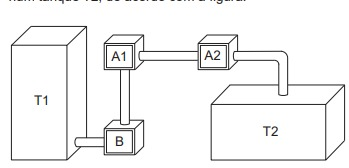
Os tanques T1 e T2 são prismas retos de bases
retangulares, sendo que a base de T1 tem comprimento c e
largura L, e a base de T2 tem comprimento c
2
e largura 2L.
Para finalizar o processo de aeração sem
derramamento do líquido em T2, o responsável deve
saber a relação entre a altura da coluna de líquido que já
saiu de T1, denotada por X, e a altura da coluna de líquido
que chegou a T2, denotada por y
A equação que relaciona as medidas das alturas y e x é
dada por
Questão 62
Para chegar à universidade, um estudante utiliza
um metrô e, depois, tem duas opções:
• seguir num ônibus, percorrendo 2,0 km;
• alugar uma bicicleta, ao lado da estação do metrô,
seguindo 3,0 km pela ciclovia.
O quadro fornece as velocidades médias do ônibus
e da bicicleta, em km/h, no trajeto metrô−universidade.
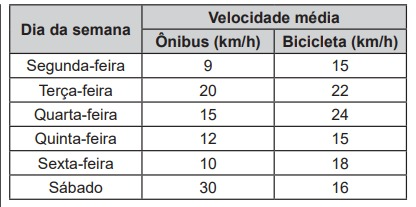
A fim de poupar tempo no deslocamento para a universidade, em quais dias o aluno deve seguir pela ciclovia?
Questão 63
Pesquisadores da Universidade de Tecnologia de Viena, na Áustria, produziram miniaturas de objetos em impressoras 3D de alta precisão. Ao serem ativadas, tais impressoras lançam feixes de laser sobre um tipo de resina, esculpindo o objeto desejado. O produto final da impressão é uma escultura microscópica de três dimensões, como visto na imagem ampliada..
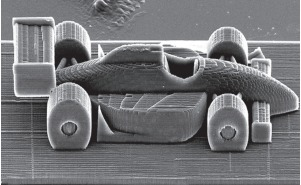
A escultura apresentada é uma miniatura de um carro de Fórmula 1, com 100 micrômetros de comprimento. Um micrômetro é a milionésima parte de um metro.
Usando notação científica, qual é a representação do comprimento dessa miniatura, em metro?
Questão 64
O artista gráfico holandês Maurits Cornelius Escher criou belíssimas obras nas quais as imagens se repetiam, com diferentes tamanhos, induzindo ao raciocínio de repetição infinita das imagens. Inspirado por ele, um artista fez um rascunho de uma obra na qual propunha a ideia de construção de uma sequência de infinitos quadrados, cada vez menores, uns sob os outros, conforme indicado na figura.
O quadrado PRST, com lado de medida 1, é o ponto
de partida. O segundo quadrado é construído sob ele
tomando-se o ponto médio da base do quadrado anterior
e criando-se um novo quadrado, cujo lado corresponde
à metade dessa base. Essa sequência de construção se
repete recursivamente.
Qual é a medida do lado do centésimo quadrado
construído de acordo com esse padrão?
Questão 65
O gerente de uma loja de cosméticos colocou à venda cinco diferentes tipos de perfume, tendo em estoque na loja as mesmas quantidades de cada um deles. O setor de controle de estoque encaminhou ao gerente registros gráficos descrevendo os preços unitários de cada perfume, em real, e a quantidade vendida de cada um deles, em percentual, ocorrida no mês de novembro.
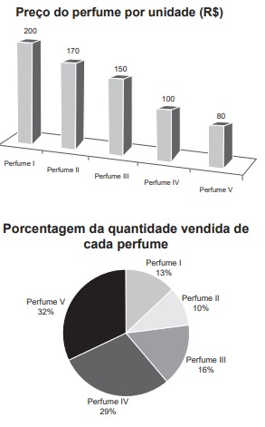
Dados a chegada do final de ano e o aumento das vendas, a gerência pretende aumentar a quantidade estocada do perfume do tipo que gerou a maior arrecadação em espécie, em real, no mês de novembro.
Nessas condições, qual o tipo de perfume que deverá ter maior reposição no estoque?
Questão 66
Três amigos, André, Bernardo e Carlos, moram em um condomínio fechado de uma cidade. O quadriculado representa a localização das ruas paralelas e perpendiculares, delimitando quadras de mesmo tamanho nesse condomínio, em que nos pontos A, B e C estão localizadas as casas de André, Bernardo e Carlos, respectivamente.
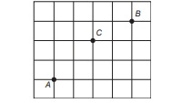
André deseja deslocar-se da sua casa até a casa
de Bernardo, sem passar pela casa de Carlos, seguindo
ao longo das ruas do condomínio, fazendo sempre
deslocamentos para a direita ( → ) ou para cima ( ↑ ),
segundo o esquema da figura.
O número de diferentes caminhos que André poderá utilizar para realizar o deslocamento nas condições propostas é
Questão 67
Uma pessoa precisa comprar 15 sacos de cimento
para uma reforma em sua casa. Faz pesquisa de preço em
cinco depósitos que vendem o cimento de sua preferência
e cobram frete para entrega do material, conforme a
distância do depósito à sua casa. As informações sobre
preço do cimento, valor do frete e distância do depósito
até a casa dessa pessoa estão apresentadas no quadro.
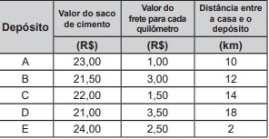
A pessoa escolherá um desses depósitos para
realizar sua compra, considerando os preços do cimento
e do frete oferecidos em cada opção.
Se a pessoa decidir pela opção mais econômica, o depósito escolhido para a realização dessa compra será o
Questão 68
Um motociclista planeja realizar uma viagem cujo
destino fica a 500 km de sua casa. Sua moto consome
5 litros de gasolina para cada 100 km rodados, e o
tanque da moto tem capacidade para 22 litros. Pelo
mapa, observou que no trajeto da viagem o último posto
disponível para reabastecimento, chamado Estrela, fica a
80 km do seu destino. Ele pretende partir com o tanque
da moto cheio e planeja fazer somente duas paradas para
reabastecimento, uma na ida e outra na volta, ambas no
posto Estrela. No reabastecimento para a viagem de ida,
deve considerar também combustível suficiente para se
deslocar por 200 km no seu destino.
A quantidade mínima de combustível, em litro, que
esse motociclista deve reabastecer no posto Estrela na
viagem de ida, que seja suficiente para fazer o segundo
reabastecimento, é
Questão 69
Uma loja de materiais de construção vende dois tipos de
caixas-d’água: tipo A e tipo B. Ambas têm formato cilíndrico e
possuem o mesmo volume, e a altura da caixa-d’água do
tipo B é igual a 25% da altura da caixa-d’água do tipo A.
Se R denota o raio da caixa-d’água do tipo A, então o raio
da caixa-d’água do tipo B é
A dinâmica de ocupação territorial descrita foi decorrente da
Questão 70
A lei municipal para a edificação de casas em lotes
de uma cidade determina que sejam obedecidos os
seguintes critérios:
• afastamento mínimo de 4 m da rua;
• afastamento mínimo de 1 m da divisa com outro lote;
• área total construída da casa entre 40% e 50% da
área total do lote.
Um construtor submeteu para aprovação na
prefeitura dessa cidade uma planta com propostas para a
construção de casas em seus 5 lotes. Cada lote tem área
medindo 200 m².
A imagem apresenta um esquema, sem escala,
no qual estão representados os lotes, as ruas e os
afastamentos considerados nos projetos entre as
casas e as divisas dos lotes.
As medidas indicadas no
esquema estão expressas em metro.
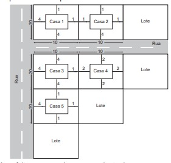
A prefeitura aprovará apenas a planta da casa
Questao 72
A exposição a barulhos excessivos, como os que percebemos em geral em trânsitos intensos, casas noturnas e espetáculos musicais, podem provocar insônia, estresse, infarto, perda de audição, entre outras enfermidades. De acordo com a Organização Mundial da Saúde, todo e qualquer som que ultrapasse os 55 decibéis (unidade de intensidade do som) já pode ser considerado nocivo para a saúde. O gráfico foi elaborado a partir da medição do ruído produzido, durante um dia, em um canteiro de obras.
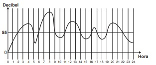
B
Nesse dia, durante quantas horas o ruído esteve acima de 55 decibéis?
Questao 73
O técnico de um time de basquete pretende aumentar a estatura média de sua equipe de 1,93 m para, no mínimo, 1,99 m. Para tanto, dentre os 15 jogadores que fazem parte de sua equipe, irá substituir os quatro mais baixos, de estaturas: 1,78 m, 1,82 m, 1,84 m e 1,86 m. Para isso, o técnico contratou um novo jogador de 2,02 m. Os outros três jogadores que ele ainda precisa contratar devem satisfazer à sua necessidade de aumentar a média das estaturas da equipe. Ele fi xará a média das estaturas para os três jogadores que ainda precisa contratar dentro do critério inicialmente estabelecido.
Qual deverá ser a média mínima das estaturas, em metro, que ele deverá fi xar para o grupo de três novos jogadores que ainda irá contratar?
Questao 74
O consumo de espumantes no Brasil tem aumentado nos últimos anos. Uma das etapas do seu processo de produção consiste no envasamento da bebida em garrafas semelhantes às da imagem. Nesse processo, a vazão do líquido no interior da garrafa é constante e cessa quando atinge o nível de envasamento.

Qual esboço de gráfico melhor representa a variação da altura do líquido em função do tempo, na garrafa indicada na imagem?
Questao 75
O quadro representa os gastos mensais, em real, de uma família com internet, mensalidade escolar e mesada do fi lho.
No início do ano, a internet e a mensalidade escolar tiveram acréscimos, respectivamente, de 20% e 10%. Necessitando manter o valor da despesa mensal total com os itens citados, a família reduzirá a mesada do fi lho.
Qual será a porcentagem da redução da mesada?
Questao 76
Num recipiente com a forma de paralelepípedo reto-retângulo, colocou-se água até a altura de 8 cm e um objeto, que ficou flutuando na superfície da água. Para retirar o objeto de dentro do recipiente, a altura da coluna de água deve ser de, pelo menos, 15 cm. Para a coluna de água chegar até essa altura, é necessário colocar dentro do recipiente bolinhas de volume igual a 6 cm³ cada, que ficarão totalmente submersas.
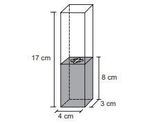
O número mínimo de bolinhas necessárias para que se possa retirar o objeto que flutua na água, seguindo as instruções dadas, é de
Questao 77
Um grupo sanguíneo, ou tipo sanguíneo, baseia-se na
presença ou ausência de dois antígenos, A e B, na superfície
das células vermelhas do sangue. Como dois antígenos
estão envolvidos, os quatro tipos sanguíneos distintos são:
• Tipo A: apenas o antígeno A está presente;
• Tipo B: apenas o antígeno B está presente;
• Tipo AB: ambos os antígenos estão presentes;
• Tipo O: nenhum dos antígenos está presente.
Foram coletadas amostras de sangue de 200 pessoas
e, após análise laboratorial, foi identificado que em 100
amostras está presente o antígeno A, em 110 amostras
há presença do antígeno B e em 20 amostras nenhum
dos antígenos está presente.
Dessas pessoas que foram submetidas à coleta de
sangue, o número das que possuem o tipo sanguíneo A é igual a
A manifestação artística expressa na imagem e apresentada no texto integra um movimento contemporâneo de
Questao 78
Antônio, Joaquim e José são sócios de uma
empresa cujo capital é dividido, entre os três, em
partes proporcionais a: 4, 6 e 6, respectivamente. Com
a intenção de igualar a participação dos três sócios no
capital da empresa, Antônio pretende adquirir uma fração
do capital de cada um dos outros dois sócios.
Duas coisas enchem o ânimo de admiração e veneração sempre crescentes: o céu estrelado sobre mim e a lei moral em mim.
A fração do capital de cada sócio que Antônio deverá adquirir é
Questao 79
Azulejo designa peça de cerâmica vitrificada e/ou esmaltada usada, sobretudo, no revestimento de paredes. A origem das técnicas de fabricação de azulejos é oriental, mas sua expansão pela Europa traz consigo uma diversificação de estilos, padrões e usos, que podem ser decorativos, utilitários e arquitetônicos.
Azulejos no formato de octógonos regulares serão utilizados para cobrir um painel retangular conforme ilustrado na figura.
Entre os octógonos e na borda lateral dessa área, será necessária a colocação de 15 azulejos de outros formatos para preencher os 15 espaços em branco do painel. Uma loja oferece azulejos nos seguintes formatos:
1 – Triângulo retângulo isósceles;
2 – Triângulo equilátero;
3 – Quadrado.
Os azulejos necessários para o devido preenchimento das áreas em branco desse painel são os de formato
Nas cidades-estado da Antiguidade Clássica, a proporção de cidadãos descrita no texto é explicada pela adoção do seguinte critério para a participação política:
Questao 80
No período de fi m de ano, o síndico de um condomínio resolveu colocar, em um poste, uma iluminação natalina em formato de cone, lembrando uma árvore de Natal, conforme as fi guras 1 e 2.
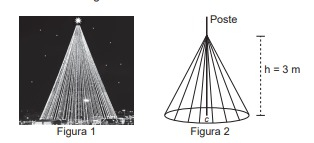